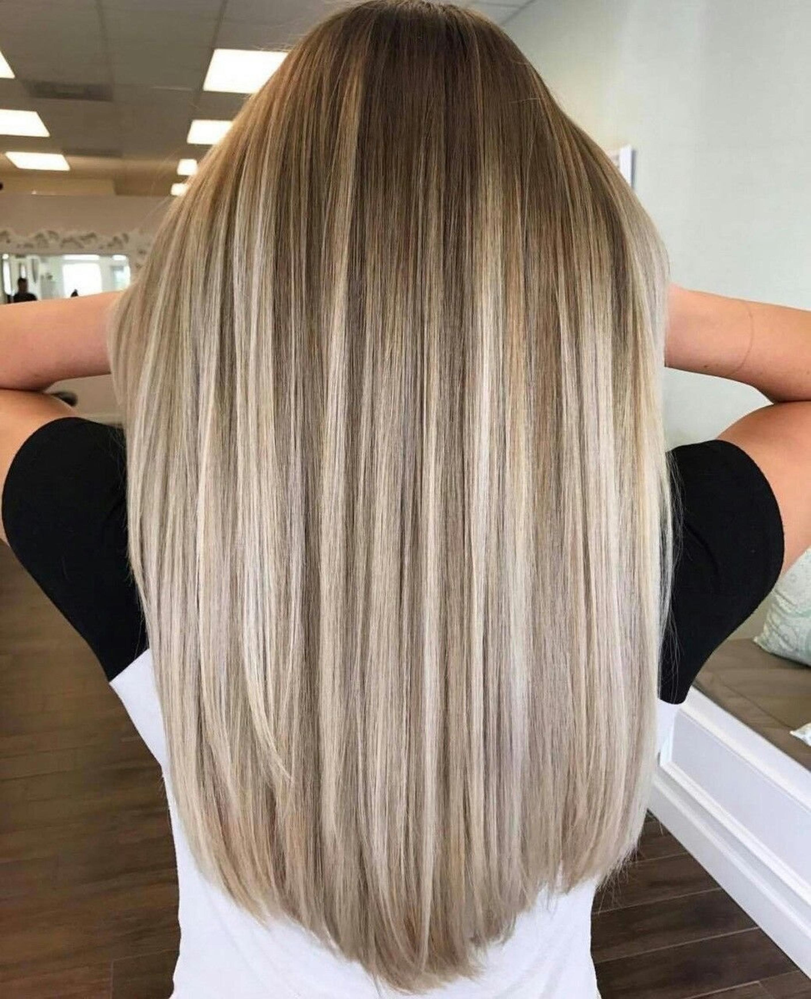
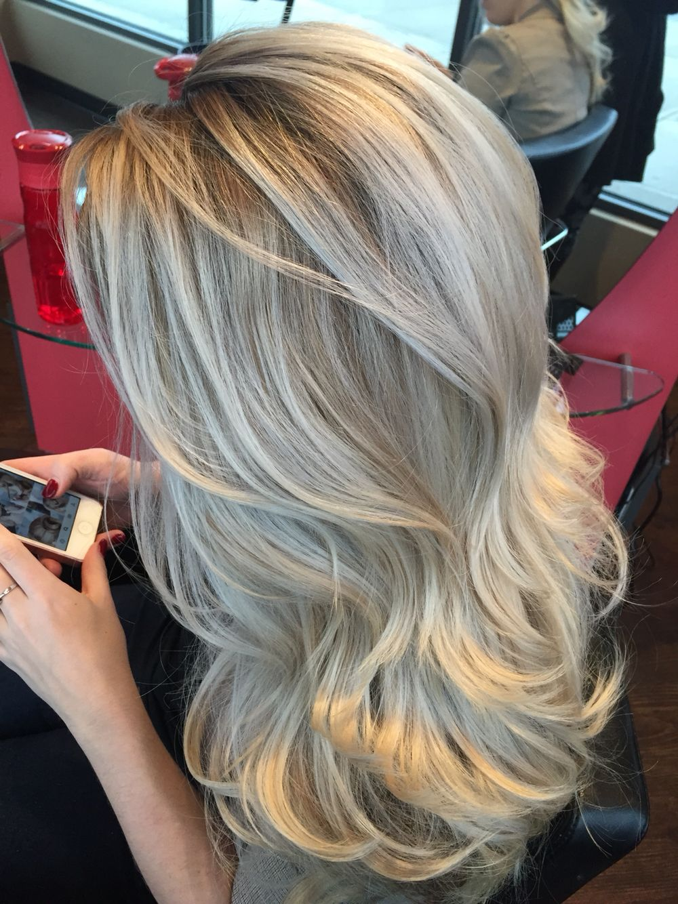

Длинные волосы — эталон женской красоты во все века,
именно длинные волосы привлекают к себе всеобщее внимание окружающих, вызывая восторг.
Стрижка для длинных волос должна лишь подчеркнуть их красоту.
В фаворитах в 2019 году стилисты выделяют две стрижки для длинных волос:
каскад и стрижка с ровным срезом, а также все виды челок.
Каскад на длинные волосы
Модным трендом среди стрижек на длинные волосы остается каскад, без челки, с прямой челкой, или удлиненной.
Многослойная стрижка хорошо смотрится на тонких волосах, вьющихся и даже на толстых жестких волосах.
Стрижка выглядит естественно, стильно и романтично,
а это главный тренд в стрижках на 2019 год.
С каскадом вы можете сменить образ не затронув длину.
Стрижка на длинные волосы с ровным срезом
Стрижка с ровным срезом одна из самых востребованных стрижек на длинные волосы в 2019 году и это не не удивительно,
ведь она обладает рядом преимуществ: делает волосы более густыми и тяжелыми,
добавляя визуально объем по длине и особенно кончики выглядят ухоженными и плотными.
Стрижка с ровным срезом выглядит аккуратно и стильно.